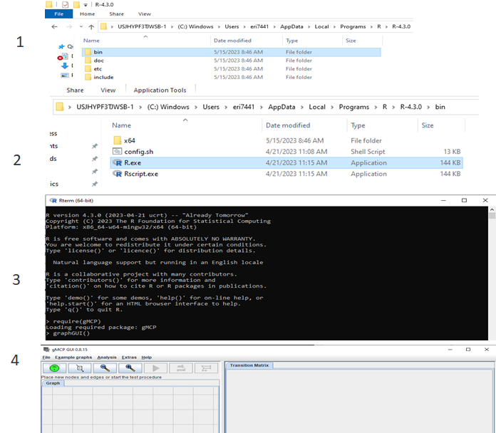
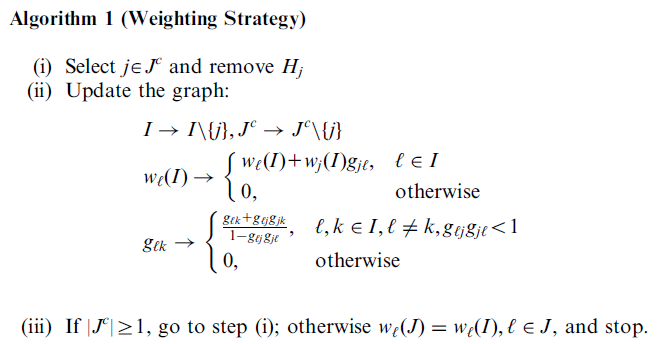
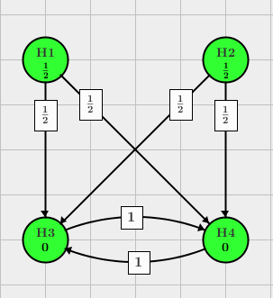

Intro to gMCP
Preliminaries
JAVA and gMCP installation
- Please ensure you are using
- A 64-bit version of R.
- With an existing version of R installed via IT, you should be able to update to latest version of R via CRAN.
- Please ensure that you have
- Java installed
- Available at AskIT – general application request
- In ‘Short Description’: Java 64-bit is needed for the gMCP package to be used with the R programming Software. Expect to encounter an error if the appropriate version of Java is not installed. (32-bit R versions require a 32-bit version of R. R 4.1 is the last version that supported 32-bit versions, hence the recommendation to move to 64-bit R)
- Please ensure that you’ve installed the gMCP package
Also worth looking into
gMCPLite is a fork of gMCP for graph-based multiple comparison procedures, with the following features:
- Kept a selected subset of the original functions.
- Removed the
rJavadependency and the Java-based graphical interface. - Added an
hGraph()function forggplot2visualizations. It bridgesgMCPresult objects andgsDesignto produce multiple comparison graphs and sequential graph updates.
Loading gMCP’s GUI
- Locate the bin folder where your version of R (with gMCP installed) is found
- Run R.exe
- Call the gMCP package
- Run gMCP::graphGUI()

Tips for using the gMCP package
- Use the gMCP::graphGUI run from command line to build candidate graphs
- Use screen capture to create .png of graphs
- Grab the code generated by gMCP::graphGUI for use in your local simulations to compare candidate graphs
- Common simulations of interest will help
- Explore impact of sample size on the collection of hypotheses under consideration
- Identify pros and cons of the candidate graphs considered
- Explore impact of assumptions regarding correlation
- Check out the package vignettes and supplemental materials
Objectives
Session 1-2 Objectives
- Understand at a high level the theoretical implication of the graphing procedure.
- Get acquainted with building graphs in the gMCP package’s Graphical User Interface
- Review examples
- Build our own graphs
- Grab code to bring back to RStudio for our simulations
- Review some ways to simulate p-values
- Generating p-values via bootstrap sampling from a historic trial
- Simulate data at patient level, run hypothesis tests and collect raw p-values
- Simulate test statistics or p-values
- Simulation functions from the gMCP package based on MV Normal distributional assumption on the vector of test statistics; here we calibrate power by specifying a vector of non-centrality parameters and a correlation matrix
- Provide code to ‘push’ simulated p-values through a series of candidate graphs.
- Review simulation results
Graphical Testing Approach Summary
- User builds a graph that captures
- The collection of hypotheses for which type I error control is required: These form the nodes of the graph
- The initial allocation of type I error weight to a subset of hypotheses
- Typically, initial allocation is associated with the primary endpoint tested on one or more doses
- Directed arrows between notes dictates how Type I error is propagates to subsequent hypotheses
- Typically, subsequent hypotheses are those deemed most important among the remaining hypotheses
- The algorithm sequential rejects hypotheses. The collection of rejected hypotheses is unique regardless of order they are rejected.
- Algorithm dictates how to update the graph after rejecting a hypothesis
- Theoretical results establish that the order in which hypotheses are rejected is inconsequential
- Familywise error rate is guaranteed
- Closed testing principle is employed Intersection tests based on weighted Bonferroni tests are recommended
- References will go into much greater detail
- These basics are sufficient to build and explore the operating characteristics of your own graphs with the gMCP package.
Reference: Theory relies on the closed testing principle
- Suppose there are k hypotheses \(H_1,..., H_k\) to be tested and the overall type I error rate is \(\alpha\). The closed testing principle allows the rejection of any one of these elementary hypotheses, say \(H_i\), if all possible intersection hypotheses involving \(H_i\) can be rejected by using valid local level \(\alpha\) tests; the adjusted p-value is the largest among those hypotheses. It controls the family-wise error rate for all the k hypotheses at level \(\alpha\) in the strong sense.
- The Graphical Testing Procedure relies on the closed testing principle to establish Family-wise Error Control
Reference: An algorithm for updating a graph after rejecting a hypothesis
- For each intersection \(\cap_{j \in J} H_j, J \subset I%\) a graph \(G_J\) can be derived from the \(G_I\) and the weights for the weighted local tests for \(\cap_{j \in J} H_j\) are the weights of the nodes of \(G_J\)
- To derive graph \(G_J\) remove all nodes that are not in J and updated the edges according to Algorithm from (Bretz et al. 2011).

Graph Basics
- Graph based multiple test procedures are closed test procedures. I.e., for a family \(\{H_i | i \in I\}, I = \{1, 2, …, n\}\) of elementary hypotheses each intersection \(\cap_{j \in J} H_j, J \subset I\) is tested with a local level \(\alpha\) test.
- Following the closed testing principle one can derive a multiple test procedure that controls the family-wise error rate (FWER) at level \(\alpha\)
- Hypotheses are represented by vertices
- Associated weights denoting the local significance levels \(\alpha_1, \alpha_2, …, \alpha_n, a_i \geq0, \Sigma_{i=1}^n\alpha_i=1\)
- When two vertices, \(H_i, H_j\) are connected through directed edges, the associated weight \(g_{ij}\) indicates the fraction of the local significance level \(\alpha_i\) that is propagated to \(H_j\) once \(H_i\) has been rejected.
- Weights with \(g_{ij}\) = 0 indicate that no propagation of the significance level is foreseen and the edge is dropped fro convenience.
Bonferroni vs. Bonferroni-Holm with 2 and four hypotheses
- Bonferroni: You can describe this multiplicity adjustment as a graph without any connected edges. Note that the initial allocation of weights sums to 1.

- Bonferroni-Holm: You can describe this multiplicity adjustment as a graph with connections extended from each node to others. Note that the initial allocation of weights sums to 1.

Fixed Sequence, Fallback, Improved Fallback
- Try to recreate this with the GUI
- Try each with p-values = c(0.01, 0.001, 0.001, 0.001) and overall type I error set to 0.025. Purple = Reject; White = Retail.

Parallel Gatekeeping, Improved parallel gatekeeping and its generalization
- What does graph on left suggest about team’s view of the relative importance of the hypotheses?
- What improvements are offered by the the middle graphic?

- Left: No recycling - we can do better
- Middle: Having rejected \(H_1\), \(H_3\), the priority is \(H_4\), not \(H_2\).
- Right: Taking different values of \(\epsilon\) leads to different graphs, with different behaviors. Simulations will be needed to assess.
Truncated Holm Procedure vs. Simple Successive Graph

|
|
Non-inferiority/Superiority & Composite/Component Testing

Non-inferiority/Superiority |
Composite/Component |
|---|---|
| Graph representing the procedure from Hung and Wang (2010) \(H_{1, NI}:\) Non-inferiority of the primary endpoint \(H_{1,S}:\)Superiority of the primary endpoint \(H_{2,NI}\) : Non-inferiority of the secondary endpoint \(H_{2,S}\) : Superiority of the secondary endpoint | Graph representing the procedure from Huque, Alosh and Bhore (2011) E.g., H1 = MACE, H2 = non-fatal MI, H3 = CV Death, H4 = non-fatal Stroke |
To the GUI
- Goal: Build/recreate this graph

- Use the GUI to step through the algorithm using the following p-values
- Step through the graph using the following p-values
- 0.0124, 0.0126, 0.001, 0.02495
- 0.0124, 0.0132, 0.001, 0.01
- 0.0124, 0.0122, 0.001, 0.02495
Setting the stage for next exercises
Outline
In this training we will get acquainted with using the gMCP package. Steps will include:
- Load data of fictitious historic trial
- Inspect data set
- Define a collection of graphs
- Use gMCP::graphGUI to generate code
- Create mechanisms for generating p-values
- Create a function that a) bootstrap samples from historic trial returns test statistics and p-values to be applied on candidate graphs
- Create some code to
- push p-values through each graph
- tally rejection rates for each hypothesis
- summarize metrics of interest that help identify preferred graph
- Explore tools within gMCP to run simulations based on multivariate normal distributions
References
Bauer, Peter, and Meinhard Kieser. 1999. “Combining Different Phases in the Development of Medical Treatments Within a Single Trial.” Statistics in Medicine 18 (14): 1833–48. https://doi.org/10.1002/(sici)1097-0258(19990730)18:14<1833::aid-sim221>3.0.co;2-3.
Bauer, P., and K. Kohne. 1994. “Evaluation of Experiments with Adaptive Interim Analyses.” Biometrics 50 (4): 1029. https://doi.org/10.2307/2533441.
Benjamini, Yoav, and Yosef Hochberg. 1995. “Controlling the False Discovery Rate: A Practical and Powerful Approach to Multiple Testing.” Journal of the Royal Statistical Society: Series B (Methodological) 57 (1): 289–300. https://doi.org/10.1111/j.2517-6161.1995.tb02031.x.
Benjamini, Yoav, and Daniel Yekutieli. 2001. “The Control of the False Discovery Rate in Multiple Testing Under Dependency.” The Annals of Statistics 29 (4). https://doi.org/10.1214/aos/1013699998.
Bretz, Frank, Torsten Hothorn, and Peter Westfall. 2016. Multiple Comparisons Using r. Chapman; Hall/CRC. https://doi.org/10.1201/9781420010909.
Bretz, Frank, Martin Posch, Ekkehard Glimm, Florian Klinglmueller, Willi Maurer, and Kornelius Rohmeyer. 2011. “Graphical Approaches for Multiple Comparison Procedures Using Weighted Bonferroni, Simes, or Parametric Tests.” Biometrical Journal 53 (6): 894–913. https://doi.org/10.1002/bimj.201000239.
HOCHBERG, YOSEF. 1988. “A Sharper Bonferroni Procedure for Multiple Tests of Significance.” Biometrika 75 (4): 800–802. https://doi.org/10.1093/biomet/75.4.800.
HOMMEL, G. 1988. “A Stagewise Rejective Multiple Test Procedure Based on a Modified Bonferroni Test.” Biometrika 75 (2): 383–86. https://doi.org/10.1093/biomet/75.2.383.
MARCUS, RUTH, PERITZ ERIC, and K. R. GABRIEL. 1976. “On Closed Testing Procedures with Special Reference to Ordered Analysis of Variance.” Biometrika 63 (3): 655–60. https://doi.org/10.1093/biomet/63.3.655.